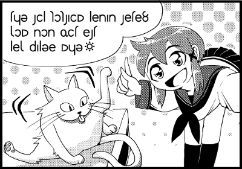

Sitemap
Contents Menu
Return
How to Use Dic.
How to Read Dic.
Arka in Manga
Frame 1 (prequel)
Frame 1 (sequel)
Frame 2
Frame 3
Frame 4
 Well, I'm gonna move on to the next sentence; "xom non fit est lex palue myu(xante" "non" is "I" and "fit" is "to give." "non" is the subject. Then why "xom" comes before the subject? What does "xom" mean? ---- ［caser］［beginning independence］and、then 19:weaker "son" ---- Weaker "son"? What's "son," then? ---- ［caser］［beginning independence］and、then Old Arka:comes from "so" ［diction］ A contrary word for "because." ---- "son" is "then." The dictionary says it's an independence, but it's a conjunction in English. Now I understand why "xom" comes before the subject "non." "xom non fit" means "Then I give." But wait, what is she going to give? When she's concentrating, she couldn't care less about the others, I think. "est" is "name." So, she will give him a name. Then what does "lex palue" mean...? Hey Alia, I got two results when I searched for "lex." ---- lex ［caser］appositive to "yul" ［antonym］xel 15:arbitrary lex(2) ［language］the character "l" 14:Established Arka:knowledge ［diction］ The 20th letter of the Lunar alphabet. The last consonant. ---- "lex(2)" is a name of a letter. The "lex" you're searching for is "lex." "yul" means an object. In this sentence, est (name) is the object. "X lex Y" means "X = Y." So, "est lex palue" means "est = palue." I mean "name = palue". Oh, I got it. The cat's name is going to be "palue." Right. By the way, "palue" means "a sunny place." The last word "myu" is shown below. ---- ［interjection］［ending independence］meow 19:back-formation from Old Arka "myup" ［diction］ Cats' meows which are used to release the tension of the sentence or the atmosphere surrounding the speaker. ---- It's also an ending independence. Seems ending independences express feelings of the speaker. We Arban use our language to: 1) construct logics 2) express feelings We can use it introvertly and Extrovertly. It's a good thing for us to express mixed feelings. Arka has an adjective which means someone is able to express his own subtle feelings. ---- naxiris ［adjective］［good meaning］understand the subtleties of emotion ［antonym］alnaxiris 20:na/ixirius (mirror of heart) ［diction］ Be able to understand the subtleties of emotion. On the contrary, "alnaxiris" means "not be able to understand the subtleties of emotion." If you describe anything as just "crap" or "shit," you are so alnaxiris. someone who is naxiris convey intelligence and take delight in elegant pursuits. It does not mean vulnarable. It means "be able to understand the subtleties of emotion." On the other hand, alnaxiris has a bad meaning. ---- Arka has such an adjective!? It's very interesting! This is why I like foreign languages! OK, then xia said "xom non fit est lex palue myu (xante"; "Then I will give you a name. It is palue." Hmm... the translation is quite a chore, though it's just a manga. I think it takes some getting used to. But I think you're rapidly growing. OK, let's take a recess before we start the next lesson.